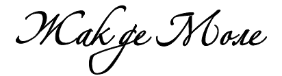
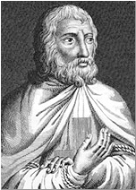
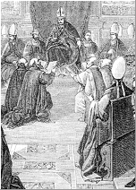
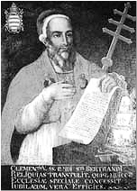
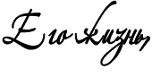

|  |
[13 октября 1311] [3 апреля 1312]
Вначале процесса в Париже от пыток умерло 36 тамплиеров. Филипп Красивый (Philip the Fair) любой ценой пытался очернить Орден Храма в глазах общества. Папа, почувствовав, что королевские приспешники угрожают его собственной власти, первым встал на защиту рыцарей, однако Филиппу быстро удалось развеять опасения понтифика. Богословское сообщество одобрило действия короля, и от лица французского народа, требующего наказания для обвиняемых, 24 марта 1308 года в Туре (Tours) была собрана ассамблея, объявившая королю, что для вынесения приговора отъявленным еретикам, вмешательство Папы не требуется.
Жак де Моле вместе с остальными предводителями Ордена должен был предстать перед Папой для объяснений, однако его довезли только до Шинона (Chinon), куда для осуществления допроса прибыли кардиналы. Историки полагают, что Филипп наделил Климента V папской властью на определенных условиях, одним из которых была ликвидация Ордена тамплиеров. Некоторые документы указывают на то, что многие тамплиеры сделали признания, которые от них ждали; похоже, что не выдержал и сам Великий магистр - то ли в страхе перед мучениями и смертью, то ли надеясь, что прекратив мешать политическим планам короля, он сможет добиться вынесения благоприятного для Ордена решения.
Однако Папа, будучи обязан придать суровым мерам, направленным на уничтожение Ордена, вид законности, в 1308 году созывает Всемирный собор в Вене (Vienna), который должен был состояться в 1310 году (в итоге он состоялся в 1311). Он также назначает в Париже комиссию по сбору материалов против Ордена, жизненно необходимых для ускорения вынесения приговора Собором. Папская булла предписывала тамплиерам явиться на Cобор, защиту же им должно было предоставить духовенство.
Жак де Моле предстал перед членами папской комиссии, которые в довольно грубой форме предъявили ему обвинения. Когда ему зачитали папские бумаги, утверждающие, что он сделал некие признания в Шиноне, он выразил крайнее изумление и негодование по поводу этих заявлений.
Многие тамплиеры последовали за своим предводителем и предстали перед Собором. Дело стало принимать весьма серьезный оборот: рыцари остались верны Ордену, себе и великим семьям, к которым они имели честь принадлежать. Большинство тех, кого ранее под угрозами пыток инквизиторы заставили сделать признания, перед членами папской комиссии отреклись от своих слов. Они во всеуслышание заявили о мучениях, которым их подвергли, и продемонстрировали решительную готовность положить на защиту Ордена свои души и тела и не на жизнь, а на смерть биться против всех, кроме Папы и короля.
Великий магистр неоднократно требовал, чтобы его судил лично Папа. Пятьсот сорок шесть тамплиеров, среди которых были как те, кто признался, так и те, кто стойко вытерпел пытки своих угнетателей, стояли на защите Ордена. Вскоре и остальные рыцари, находящиеся в заключении по всей Франции, настояли на своем участии в этом благородном протесте и в результате были переведены в тюрьмы столицы. Таким образом, количество подсудимых достигло примерно девяти сотен. Аргументы их в защиту Ордена были неоспоримы, и поэтому, когда они стали достигать на этой ниве первых успехов, что путало карты королю и его доверенным лицам, монарха нанес ответный удар - столь же незамедлительно, сколь и безжалостно. Тех рыцарей, что отреклись от сделанных ранее признаний и настаивали на невиновности Ордена, монарх передал в руки инквизиции.
Весной 1310 года казалось, что процесс над тамплиерми идет в верном направлении. В Париже Орден нашел множество сторонников из числа уважаемых правозащитников. Для тех, кто хотел скрыть правду, настал момент действовать, и более возмутительного решения и представить себе было сложно. Воспользовавшись тем, что судебные процессы над Орденом и над отдельными людьми шли параллельно, и парижские судьи были полностью заняты процессами по отдельным делам, они поселили в сердцах свидетелей по делу тамплиеров смертельный ужас: решением Папы в Парижской епархии правосудие над отдельными лицами вершилось Собором провинции, во главе которого стоял архиепископ Санский (Sens).
Как выяснилось, архиепископ Санский приходился братом одному из ближайших к королю вельмож, Энгеррану де Мариньи (Enguerrand de Marigny). В Париже он собирает местный Собор, этот инквизиционный суд был наделен правом вести дело без заслушивания обвиняемого и немедленно выдавать ордер на арест. Защитники заключенных понимали серьезность угрозы, вызванной внезапным созывом Собора. Они подтвердили все то, что ранее сказали на папской комиссии 10 мая 1310 года. Однако глава комиссии, архиепископ Нарбоннский (Narbonne), отказался от участия, узнав о готовящемся вероломстве, сообщив, что ему нужно «то ли послушать, то ли провести мессу». Остальные члены комиссии могли лишь ответить: «Наши сердца полны сочувствия к вам, но приговоры отдельным лицам выносит архиепископ Санский, у нас связаны руки».
Тех, кто настойчиво пытался отказаться от сделанных признаний, повторно объявили еретиками и передали мирскому правосудию, которое приговорило их к сожжению на костре. Тех, кто не сознался и отказывался это сделать, приговорили к пожизненному заключению как нераскаянных. Те, кто не отказался от признаний в безбожности и разврате, приписываемых Ордену, были освобождены, им были отпущены грехи, и их назвали «раскаявшимися тамплиерами». Выдвижение обвинения, проведение расследования, осуждение «вновь впавших в ересь» рыцарей, вынесение приговора о сожжении на костре и приведение его в действие –все это было сделано за один день, понедельник 11 мая и следующее утро. В тот день в Париже погибло пятьдесят четыре рыцаря. Архиепископ Санский со своими приспешниками признали их повторно впавшими в ересь, погрузили на телеги и публично сожгли между Винсеннским лесом (Vincennes forest) и Парижской мельницей, за воротами Сен-Антуан (Saint-Antoine).
Записи открывают нам имена некоторых рыцарей, с честью вынесших эти мучения. Среди них были Госеран де Бюри (Gaucerand de Buris), Гвидо де Ниси (Guido de Nici), Мартин де Ниси (Martin de Nici), Готье де Бюллен (Gaultier de Bullens), Жак де Санси (Jacques de Sansy), Анри д’Англези (Henry d'Anglesy), Лоран де Бон (Laurent de Beaune) и Рауль де Фреми (Raoul de Fremi). Каждый историк, писавший о пытках рыцарей-тамплиеров, подтверждал необыкновенное мужество, которое они сохраняли до самой смерти: узники пели гимны, перенося мучения с рыцарской доблестью и монашеским смирением. Они показали, что достойны сочувствия современников и восхищения последующих поколений. «Они принимали страдания, - написал один хронист того времени, - со стойкостью, из-за которой их души легко могли ожидать ужасы вечного проклятия, так как они заставляли невежественную чернь поверить в свою невиновность».
Механизм был запущен, и у защитников не осталось ни малейшей надежды. Двое из четырех назначенных адвокатов исчезли. Комиссия ничего не предприняла для того, чтобы хоть как-то скрыть, каким фарсом были заседания, прошедшие 13 числа в часовне Сент-Элуа. Тем не менее, по сравнению с предыдущим днем кое-что изменилось. Первая дача показаний свидетелем, запланированная на тот день, была перенесена. Это был Эмери де Вийер-ле-Дюк (Aimery de Villiers-le-Duc), рыцарь из епархии Лангре (Langres); ему было около пятидесяти лет, и двадцать восемь из них он был тамплиером. Как только зачитали обвинение, он, «побледнев от ужаса», запротестовал, сказав, что если он лжет, то пусть он умрет на месте и отправится прямиком в ад. Он бил себя кулаком в грудь, протягивал руки к алтарю и падал на колени. «Я согласился, - заявил он, - с некоторыми обвинениями лишь под пытками, которым подвергли меня рыцари короля, Гийом де Марсильи (Guillaume de Marcilly) и Гуго де Ля Сель (Hugues de La Celle), однако все это - ложь. Вчера я видел, как 54 моих друзей повезли на костер из-за того, что они отказались взять на себя вменяемые им преступления, я понял, что не смогу противостоять страху перед огнем. Поверьте, я готов был присягнуть на чем угодно: если бы они захотели, я бы поклялся, что убил Бога».
Он умолял членов комиссии и писцов повторить то, что он сказал стражникам из страха быть сожженным. Этот драматический эпизод произвел такое сильное впечатление на представителей папы, что они решили временно приостановить казни. Они возобновили процессуальные действия (которые с этого момента были лишь видимостью), только после полугодового перерыва, и то в качестве обычной формальности.
Начиная с декабря 1310 свидетельствовали только рыцари, чье раскаяние было принято синодами провинций, явившиеся «без одежд и с обритыми бородами». Когда расследование наконец было закончено, старейшинам грядущего Венского собора были отправлены две копии отчета о процессе. Отчет состоял из 229 страниц, исписанных мелким убористым почерком.
[Наверх] [3 апреля 1312]
В
енский собор, долго откладываемый по различным обстоятельствам, в конце концов состоялся в октябре 1311 года, в тринадцатый день месяца, ровно четыре года спустя после начала массовых арестов тамплиеров во Франции. Климент V использовал время, предшествующее собору, для того, чтобы задним числом вооружиться многочисленными доказательствами против тех, кого он уже осудил и приговорил. Он знал, что на западе страны говорили: «Все тамплиеры, кроме тех, кто служит на побегушках у короля Франции, отрицали обвинения». Он должен был положить конец этим слухам, и потому издал буллы, предписывающие королям Англии и Арагона использовать пытки, несмотря на местные обычаи, запрещающие подобные действия. В последний момент действие этих указаний было распространено на Кипр и Португалию; вскоре и там полилась кровь мучеников. Известно, что в августе-сентябре 1311 года епископ Нимский и архиепископ Пизанский прибегли к пыткам. Эти прелаты послали Папе лишь угодные ему показания, свидетельства же тех, кто держался до конца, к делу приобщены не были.
Гийом Ле Мэр (Guillaume Le Maire), епископ Анжерский (Angers), вызванный, как и все христианские прелаты, на Всемирный собор в Вене, изложил свое «мнение» следующим образом: «Есть две точки зрения на дело тамплиеров, - писал епископ. - Одни ратуют за немедленное упразднение Ордена ввиду скандала, который разгорелся вокруг него в христианском мире, и показаний двух тысяч свидетелей, подтверждающих его преступления. Другие же говорят, что мы должны дать Ордену возможность выступить в свою защиту, потому что нельзя отсекать от церкви часть ее без должного обсуждения. Что ж, лично я полагаю, что наш владыка Папа должен силою всего своего могущества и своею властью пресечь деяния Ордена, который всеми силами своими стремился запятнать светлое имя веры Христовой в глазах неверных и заставить верных усомниться». Гийом Ле Мэр честно отрабатывал свой хлеб. Но что было бы, пожелай епископ, не так страстно преданный королю, честно выступить в начале процесса? Он рассматривал бы вопрос о вине тамплиеров с тех же позиций.
Когда зачитывали обвинение, девять рыцарей вызвались свидетельствовать в защиту Ордена. В августе ассамблея ждала этого последнего проявления благородства, сочувствия или жалости, но Папа велел заковать рыцарей в кандалы. Ордену не позволили воспользоваться защитой этих благородных просредников, хотя члены Собора были готовы их выслушать. В письме от 11 ноября 1311 года, адресованном королю, Климент V похвалялся этим поступком. Таким образом, слушание завершилось очень быстро, без каких бы то ни было дальнейших происшествий.
Орден храмовников обвиняли в том, что он погряз в язычестве. Согласно папскому протоколу расследования, состоящему из 127 отдельных глав, основное обвинение, выдвинутое против Ордена, заключалось в том, что церемония посвящения новых членов включала многочисленные оскорбления в адрес распятия, непристойные поцелуи и мужеложство. Во время богослужения священники якобы отказывались совершать таинство причастия ибо не верили в него.
В итоге, тамплиеров обвинили в поклонении идолу (он имел форму человеческой головы или кошки), утверждая, что они день и ночь носили на своих рубашках особые нити, заколдованные через контакт с идолом. Таковы были основные обвинения. Были и другие: утверждалось, что Великий магистр и другие иерархи Ордена, хотя и не были священниками, считали себя вправе отпускать грехи своим братьям, что их имущество было нажито неправедным путем, а пожертвования свершались не так, как должно. Обвинение представило эти преступления как продиктованные тайным уставом тамплиеров.
Не надо и говорить, что люди Филиппа Красивого перевернули вверх дном все «храмы» Франции в надежде найти компрометирующие материалы, а именно: копии тайного «устава», идолов, еретические книги. Реальные описи показывают, что кроме священных и конторских книг им ничего найти не удалось: единственным уставом был чистейший устав Святого Бернара (Saint Bernard). Однако, в Париже Гийом Пидуа (Guillaume Pidoye), отвечающий за конфискованное имущество ордена, представил инквизиторам «посеребренную женскую голову, внутри которой были фрагменты черепа, завернутые в ткань».
Это была реликвия, обычная для «религиозных сокровищниц» XIII века. Несомненно, в праздничные дни тамплиеры извлекали ее на свет и поклонялись ей, вполне возможно, что рыцари привязывали к ней шнуры или наплечники, выполняя примитивный обряд очищения. Все это не имеет никакого отношения к идолопоклонству: ведь даже в наше время верующие прикасаются к святыням четками, и их никто не называет за это идолопоклонниками.
Таким образом, в ходе расследования не было получено никаких материальных доказательств или «немого свидетельства» преступлений Ордена. Оставались только устные показания. Но сколько бы признаний не получило обвинение, все они теряют силу, стоит лишь вспомнить, что они были получены под пытками инквизиции. Лучше всех это выразил Эмери де Вийе-ле-Дюк, сказав: «Если бы они захотели, я бы поклялся, что убил Бога». Поэтому все факты нам следует рассматривать именно в этом свете.
Если тамплиеры действительно исполняли приписываемые им идолопоклоннические ритуалы, то есть, были бы сектой, среди них должны были найтись фанатики, которые встали бы за свою веру, находя высокую радость в гонениях. Однако ни один тамплиер за все время процесса не встал на защиту «преступлений» таинственного культа. Всем тамплиерам, сознавшимся в отречении от Бога и идолопоклонничестве, были отпущены грехи.
Но не удивительно ли, что среди «еретиков-тамплиеров» не нашлось ни одного мученика! Сотни рыцарей и их братьев по оружию, нашедших свою смерть в тюрьме от рук палачей или в пламени костра, не принесли в жертву своей веры. Они предпочли признанию смерть, а принужденные к признанию силой, не отказывались от него. Утверждалось, что тамплиеры – это альбигойцы, однако альбигойцы, как и древние монтанисты в Азии, обожествляли пытки. Даже во времена Климента V итальянские «дульсинисты» обретали духовную силу, отчаянно, раз за разом выкрикивая слова своего учения. Тамплиеры не демонстрировали ни торжества духа, ни радости от победы над палачом. Они переносили страдания, продолжая отрицать обвинения.
Если бы тамплиеры и правда были замешаны в тех не просто чудовищных, но и чудовищно глупых деяниях, которые им приписывали, признания, которые они давали под пытками, должны были быть одинаковыми. И в то же время, когда они говорят об тайных церемониях Ордена, их описания богомерзких ритуалов сильно разнятся. Мишле (Michelet), веривший в правдивость преступлений тамплиеров, осторожно заметил: «Их признания идентичны, однако подробности их рассказов очень различаются». Он делает вывод, что «признания были подготовлены заранее, а различия в показаниях делали их более правдоподобными». Но зачем это было нужно? Если тамплиеры были невиновны, их реакции на вымышленные обвинения не могли быть идентичными; если же они были виновны, их признания должны были быть совершенно одинаковы.
Недостоверность обвинений, жестокость, проявленная в ходе расследования, противоречивость показаний – все это не могло не насторожить судей, даже судей того времени. Какое сердце могло не дрогнуть при взгляде на следы пыток и раны жертв, клянущихся в любви к терзающей их церкви, как можно было не слышать криков, исполненных боли, чье эхо осело на страницах писцов великой комиссии, продолжая взывать оттуда! Тем, у кого были причины скрывать правду, нужно было изыскать любые средства, чтобы в корне пресечь публичное обсуждение. Но печать, наложенная на уста последних защитников Ордена на Венском соборе, сама взывает к тому, чтобы они были услышаны, и является еще одним доказательством в пользу тамплиеров.
До сих пор неясно, что именно произошло на Венском соборе. Можно предположить, что король Франции заставил Папу повлиять на решение, вынесенное Собором. Климент V намеревался как можно скорее покончить с этим делом. Согласно записям Алберико да Ростате (Alberico da Rostate), папа сказал: «Если Орден не может быть уничтожен per viam justitiae, то пусть это случится per viam expedientiae, тогда наш дорогой сын, король Франции, будет огражден от скандала». Однако папа не мог манипулировать всеми тремя сотнями прелатов, прибывших на Собор. Он мог положиться только на французских епископов, в то время как священнослужители из Германии, Арагона, Кастилии и Италии, которые почти единодушно оправдали тамплиеров в своих епархиях, были готовы потребовать официальных прений.
Климент V пошел еще дальше и заключил в тюрьму девятерых рыцарей-храмовников, которые, ничего не подозревая, объявились в Вене, а также беглых рыцарей, скрывавшихся в горах под Лионом. Это было новым нарушением закона и права на защиту. Зарубежные прелаты были глубоко возмущены. Филипп Красивый и его окружение поняли, что без применения силы не обойтись. Из Лиона, откуда он следил за Собором и где созвал новую ассамблею из священнослужителей, представителей знати и местных общин «для защиты католической веры», в марте 1312 года король с армией направился в Вену, где и воссел на Соборе рядом с Папой. Тот, заручившись такой поддержкой, решился прочесть перед Собором буллу, состряпанную с помощью королевских советников.
В
булле Vox in Excelso от 3 апреля 1312 года Папа признал, что Орден не совершил ничего, что заслуживало бы порицания церкви. Он посчитал, однако, что Орден запятнал себя не меньше неприемлемым поведением по отношению к королю Франции и тем фактом что никто «не пожелал» встать на его защиту, а поскольку средства Ордена истощались в ходе бесконечного процесса, что было плохо для Святой земли, он заявил о необходимости принять некое «временное решение».
Деятельность Ордена была прекращена не путем вынесения «окончательного приговора», а при помощи временных мер, папского повеления «с благословения Священного собора». Так погиб Орден тамплиеров: запрещен без вынесения приговора, истек кровью, не вступив в битву.
Решения Венского собора не увидели света, и булла, объявляющая временный запрет, впервые была напечатана только в 1606 году. В булле Considerante, опубликованной спустя всего четыре дня после буллы, запрещающей деятельность Ордена, Папа заявил, что все материалы, собранные против Ордена и его рыцарей не представляют собой достаточных оснований для признания их вины, а лишь бросают на рыцарей тень подозрения. Климент XIV позже прибегнул к тому же подходу, пытаясь ликвидировать Орден иезуитов: в папском указе от 31 июля 1773 года он написал: «Папа Климент V призвал к ответу и в итоге ликвидировал военизированный Орден тамплиеров ввиду их сомнительной репутации, и это несмотря на то, что они были по всем правилам конфирмованы, несмотря на то, что они несли службу на благо христианства настолько славно, что папская епархия серьезно приумножила свои богатство, мощь, права и привилегии, и даже несмотря на то, что Венскому собору, которому понтифик передал это дело, было рекомендовано воздержаться от вынесения формального окончательного приговора».
Французские тамплиеры даже не думали прибегать к оружию. Разве смирение этих людей, осужденных без права на защиту, не является еще одним доказательством того, насколько смехотворны выдвигаемые и сейчас против них обвинения в том, что Орден представлял собой «государство в государстве», угрожаю целостности французской монархии? Булла Vox in Excelso так и оставила без ответа два важных вопроса: какова будет судьба тамплиеров, томящихся в заключении, и что будет с богатствами Храма.
Имущество Храма, несмотря на бдительность распорядителей, стало исчезать уже во время процесса. аппетиты правителей распалялись настолько, что некоторые предлагали учинить подобную расправу над орденами госпитальеров и меченосцев. В 1307 году архиепископ Рижский обвинил в ереси Орден тевтонцев. Отвратительная алчность правителей Реформации начинала показывать себя. После Венского собора начался раздел добычи. Теоретически, все имущество Ордена должно было быть передано в папскую епархию, которая, в свою очередь, должна была передать его госпитальерам, однако эта фиктивная мера не помешала королю присвоить себе львиную долю. Самое главное, король больше ничего не должен былОрдену, поскольку каноны запрещали возвращать долги еретикам.
Кроме того, король присвоил себе все средства, находящиеся в банках Ордена. Он пошел еще дальше, и даже когда остатки имущества тамплиеров были официально обещаны госпитальерам, король заявил, что он еще не уладил с Храмом всех финансовых вопросов, и Орден остался должен ему сумму, настолько внушительную, что невозможно было точно определить ее размер. По этой причине госпитальеры, принявшие на себя права и обязательства Храма, вынуждены были пойти на сделку и 21 марта 1313 года заплатить 200 000 турских ливров, однако, это совершенно не умерило аппетитов монархов, и им пришлось платить, пока не настало время Филиппа Длинного. Что же касается недвижимости, Филипп Красивый исправно получал доходы вплоть до своей смерти, после чего госпитальеры остались должны возместить королевской казне те средства, что были затрачены с 1307 по 1312 год на пытки тамплиеров и содержание их в тюрьме. В итоге вышло, что щедрый дар, полученный их Орденом, скорее разорил госпитальеров, нежели обогатил их.
До сих пор оставался нерешенным вопрос с узниками. Запрещение Ордена, похоже, положило конец преследованию рыцарей. Тем, кто добровольно пошел через унизительное раскаяние, была дарована свобода. Кто-то отправился в скитания, кто-то стал зарабатывать на жизнь черным трудом, некоторые ушли в монастырь, другие, разочаровавшись в выбранном пути, женились. Так и не раскаявшихся рыцарей и тех, кто отказался от своих признаний, наказывали согласно законам инквизиции. Наиболее известными из последних были двое верховных иерархов, Жак де Моле и настоятель Ордена в Нормандии. То, что Великий магистр однажды признался в преступлениях, и долгие годы преследований, которые он пережил потом, позволяли надеяться, что, он под гнетом несчастий, признает преступления Ордена, и, таким образом, оправдает излишнее рвение королевского правосудия.
Великий магистр Ордена тамплиеров продолжал требовать правосудия, которое Папа обещал вершить над ним лично. Однако вместо этого понтифик, испугавшись встречи лицом к лицу, назначил парижскую комиссию из трех человек, которая должна была судить де Моле и еще троих руководителей Ордена. Таким образом, лишь 22 декабря 1312 года Климент V, заручившись поддержкой Филиппа Красивого, назначил ответственными за ведение процесса троих кардиналов – своего племянника Арно де Фаржа (Arnaud de Farges), монаха-цистерцианца Арно Новелли (Arnaud Novelli) и брата Николя де Фреминвиля (Nicolas de Freminville) – кардиналов, которые незадолго до этого отвернулись от своих братьев дабы спастись самим. Им было приказано заслушать последние показания де Моле и остальных трех руководителей, которых держали вместе с ним, среди которых был и Жоффруа де Шарне. Чего они от них хотели? – подтвердить правомерность двойного приговора, основанного на доказанности обвинений, выдвинутых против Ордена тамплиеров, в соответствии с многочисленными признаниями, полученными к тому моменту трибуналом. Для обоих правителей это стало бы блестящей и долгожданной победой.
|  |